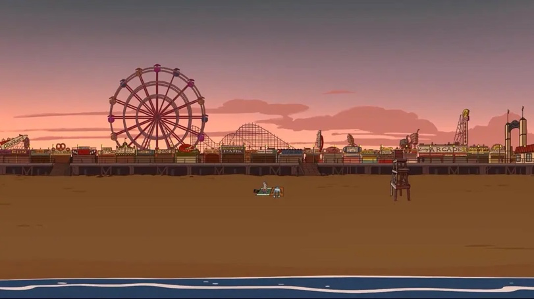
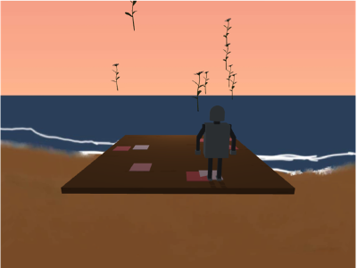
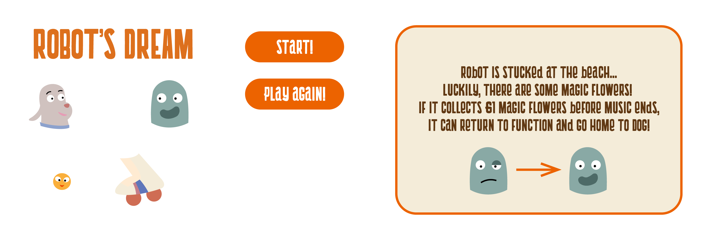

Robot Dreams - Computer Graphic Project
Introduction
This is a game dedicated to the movie Robot Dreams. Here is a brief summary of the movie.
So the protagonist, Dog, bought a Robot for companion. In the movie, Dog buys Robot as a companion, and they spend a wonderful summer together. However, after a day at the beach, Robot suddenly breaks down and can no longer move. Since the beach closes for the season, Dog is forced to leave Robot behind until the next year. The story is heartbreaking, but also comforting. Over the following months, both Dog and Robot continue their lives separately. They meet new companions, recover in different ways, and eventually learn that it is possible to move on while still treasuring the memories they shared.
This game is designed as a small comfort for fans of the movie. I imagined that Robot must have been very lonely and bored while lying on the beach, unable to move. Therefore, I created a chance for Robot to recover.
The goal of the game is to control Robot and collect 61 flowers. The number 61 is a small reference to June 1st, the day when the beach opens again. If the player succeeds, Robot is freed and can reunite with Dog. I want the player to feel a mixture of nostalgia, comfort, and hope. Even though the original movie is bittersweet, this game gives players a gentle “what if” ending where they can help Robot stand up again.
So the protagonist, Dog, bought a Robot for companion. In the movie, Dog buys Robot as a companion, and they spend a wonderful summer together. However, after a day at the beach, Robot suddenly breaks down and can no longer move. Since the beach closes for the season, Dog is forced to leave Robot behind until the next year. The story is heartbreaking, but also comforting. Over the following months, both Dog and Robot continue their lives separately. They meet new companions, recover in different ways, and eventually learn that it is possible to move on while still treasuring the memories they shared.
This game is designed as a small comfort for fans of the movie. I imagined that Robot must have been very lonely and bored while lying on the beach, unable to move. Therefore, I created a chance for Robot to recover.
The goal of the game is to control Robot and collect 61 flowers. The number 61 is a small reference to June 1st, the day when the beach opens again. If the player succeeds, Robot is freed and can reunite with Dog. I want the player to feel a mixture of nostalgia, comfort, and hope. Even though the original movie is bittersweet, this game gives players a gentle “what if” ending where they can help Robot stand up again.
Scene & Visual Design
Scene
The setting of the game is based on the sunset beach scene from Robot Dreams. This is the moment when Dog and Robot realize that Robot is broken, and it also becomes the moment when they are forced to separate. Since this scene is emotionally central to the movie, I wanted the player to return to that same place and give Robot another chance. Image on the left below is the actual scene from the movie, and the right is screenshot from my game.
The setting of the game is based on the sunset beach scene from Robot Dreams. This is the moment when Dog and Robot realize that Robot is broken, and it also becomes the moment when they are forced to separate. Since this scene is emotionally central to the movie, I wanted the player to return to that same place and give Robot another chance. Image on the left below is the actual scene from the movie, and the right is screenshot from my game.


Lighting
The lighting design also follows the idea of sunset. During the game, the light source slowly moves downward, imitating the sun setting over time. Players can see the shadow stretches as time went by. This visual change helps show the passage of time and reinforces the feeling that the player is racing against the end of the day.
Visual Assets
For the items and boosters, I chose objects that are related to the movie. The flowers come from Robot’s dream of Oz, and they become the main collectible in the game. I also used a yellow cube as one of the boosters, referencing the yellow path in Oz that leads the way home. For the speed booster, I used skaters, because roller skating is one of Dog and Robot’s happiest memories together.
Beside the obj files, I drew the flower like the movie, and the skater in a cartoonish style for the game UI. This makes the interface feel lighter and cuter, matching the tone of the original movie. I also applied the font used in the movie poster, Cookit Regular, throughout the game.

Technical Choices
Background
I used an environment cubemap to create the beach scene around the player. I tried to convert a scene from the movie into a cubemap using Adobe Illustrator, Photoshop, and some drawing.
Camera
I used a third-person view so the player can clearly see Robot, the falling flowers, and the ground markers at the same time. I also allowed the player to drag the mouse to rotate the view, because the environment is part of the game’s visual design and I wanted the player to be able to look around. Before the game starts, the camera slowly rotates around the scene to show the sunset beach and the cubemap environment.
Projection
I used a perspective camera with a wider field of view (80) so the scene feels more open and less cramped. Since the game is about catching falling objects, the player needs to see both the character and the nearby space clearly. The canvas keeps a 4:3 ratio, and I set the display size to about 75% of the screen height, because full height felt a little too large during actual play.
Lighting
I used one point light with Phong shading. The light is meant to imitate the sun, so it slowly moves downward as time passes. This makes the scene feel closer to sunset, and players can also see the shadows stretch during the game. I used ambient, diffuse, and specular lighting so that the objects are not completely flat: ambient keeps the darker parts visible, diffuse shows the object shapes and colors, and specular gives small highlights so the models look more three-dimensional.
Texture Mapping
I used texture on the flower model and the beach ground to make the scene feel less plain. Some objects use solid colors instead of detailed textures, such as the yellow cube booster. This is intentional because those objects need to be easy to recognize quickly during gameplay. The visual style is not meant to be realistic; it is closer to a simple cartoon game inspired by the movie.
Game Feedback
I added pink-to-red blocks on the ground to show where the flowers will land. Pink means the flower is still high in the air, and the color becomes red as it gets closer to the ground. This helps the player predict where to move. Boosters do not have landing markers because I wanted the markers to mainly guide the flower-collecting goal, while boosters stay as extra surprise items. There are also sound effects for collecting flowers, getting boosters, clicking buttons, and reaching the win or lose state, so the player receives feedback without needing to look at the console.
I used an environment cubemap to create the beach scene around the player. I tried to convert a scene from the movie into a cubemap using Adobe Illustrator, Photoshop, and some drawing.
Camera
I used a third-person view so the player can clearly see Robot, the falling flowers, and the ground markers at the same time. I also allowed the player to drag the mouse to rotate the view, because the environment is part of the game’s visual design and I wanted the player to be able to look around. Before the game starts, the camera slowly rotates around the scene to show the sunset beach and the cubemap environment.
Projection
I used a perspective camera with a wider field of view (80) so the scene feels more open and less cramped. Since the game is about catching falling objects, the player needs to see both the character and the nearby space clearly. The canvas keeps a 4:3 ratio, and I set the display size to about 75% of the screen height, because full height felt a little too large during actual play.
Lighting
I used one point light with Phong shading. The light is meant to imitate the sun, so it slowly moves downward as time passes. This makes the scene feel closer to sunset, and players can also see the shadows stretch during the game. I used ambient, diffuse, and specular lighting so that the objects are not completely flat: ambient keeps the darker parts visible, diffuse shows the object shapes and colors, and specular gives small highlights so the models look more three-dimensional.
Texture Mapping
I used texture on the flower model and the beach ground to make the scene feel less plain. Some objects use solid colors instead of detailed textures, such as the yellow cube booster. This is intentional because those objects need to be easy to recognize quickly during gameplay. The visual style is not meant to be realistic; it is closer to a simple cartoon game inspired by the movie.
Game Feedback
I added pink-to-red blocks on the ground to show where the flowers will land. Pink means the flower is still high in the air, and the color becomes red as it gets closer to the ground. This helps the player predict where to move. Boosters do not have landing markers because I wanted the markers to mainly guide the flower-collecting goal, while boosters stay as extra surprise items. There are also sound effects for collecting flowers, getting boosters, clicking buttons, and reaching the win or lose state, so the player receives feedback without needing to look at the console.
Challenges and Solutions
Seamless Cubemap
I wanted the scene to feel like it extended into the distance, but stretching only certain parts of the image without creating visible seams was hard. Because of this, from some angles, the viewer can still tell that the environment is a box.
First Person View / View Changing
Initially I planned to have the game played from first person view, and there are boosters that switches shortly back to third person view which is easier for the player to operate. However, after implementation, I found out it would be very, very difficult for the player detect and run to items, since it requires looking up and moving around, and also has to be fast enough. It is almost impossible to collect any flowers. So, eventually I had to remove first person view.
Same for the view rotating. After there are no first-person view, I tried to have it rotate to weird angles randomly as a kind of challenge for the player and will have boosters for entering rotating modes so player can rotate back to their likings. But since I use the arrow keys, if the scene rotates 180 degrees, it is counterintuitive to use the arrow keys, and the difficulty is again too high. So I gave up and it is now just a simple game.
More realistic beach ground
I wanted the robot to feel like it was standing directly inside the beach environment, but a cubemap is only a background and cannot be used as an actual ground surface. Therefore, I can only keep a simple ground object in the scene so that the robot, falling objects, and shadows would have a clear surface to interact with.
Win ending
I originally wanted to make a more complete ending animation where Robot reunites with Dog after winning. In the final version, I simplified it into a win result screen, because I cannot find a decent Dog obj file. In fact, I find none. Luckily the robot is easy to build by hierarchy transformation so I made it by myself.
I wanted the scene to feel like it extended into the distance, but stretching only certain parts of the image without creating visible seams was hard. Because of this, from some angles, the viewer can still tell that the environment is a box.
First Person View / View Changing
Initially I planned to have the game played from first person view, and there are boosters that switches shortly back to third person view which is easier for the player to operate. However, after implementation, I found out it would be very, very difficult for the player detect and run to items, since it requires looking up and moving around, and also has to be fast enough. It is almost impossible to collect any flowers. So, eventually I had to remove first person view.
Same for the view rotating. After there are no first-person view, I tried to have it rotate to weird angles randomly as a kind of challenge for the player and will have boosters for entering rotating modes so player can rotate back to their likings. But since I use the arrow keys, if the scene rotates 180 degrees, it is counterintuitive to use the arrow keys, and the difficulty is again too high. So I gave up and it is now just a simple game.
More realistic beach ground
I wanted the robot to feel like it was standing directly inside the beach environment, but a cubemap is only a background and cannot be used as an actual ground surface. Therefore, I can only keep a simple ground object in the scene so that the robot, falling objects, and shadows would have a clear surface to interact with.
Win ending
I originally wanted to make a more complete ending animation where Robot reunites with Dog after winning. In the final version, I simplified it into a win result screen, because I cannot find a decent Dog obj file. In fact, I find none. Luckily the robot is easy to build by hierarchy transformation so I made it by myself.
Demo